The People Who Help You Move Forward.
Skilled hands. Thoughtful care. One shared commitment to your recovery. Every clinician at PhysioCare combines doctoral-level rehabilitation science with dedicated one-on-one attention.
100%
Doctoral Faculty
15+
Rehab Clinicians
12k+
Patients Healed
Clinical Leadership & Mentorship
Our directors actively evaluate complex patient cases, guide doctoral fellows, and calibrate clinical rehabilitation benchmarks.
Dr. Marcus Chen, PT, CSCS
Senior Physiotherapist · 14+ Years Clinical Leadership
Directs complex musculoskeletal care, advanced biomechanical gait assessments, and post-operative joint stabilization protocols across our rehabilitation suites.
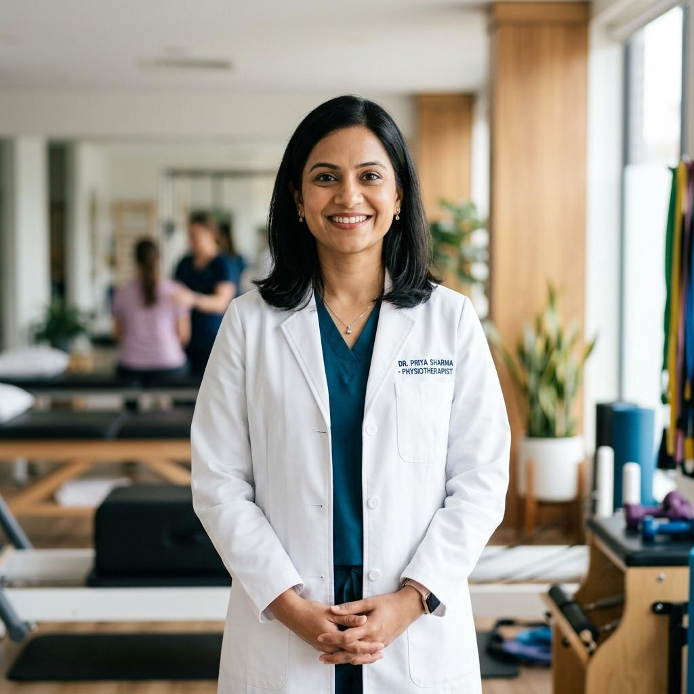
DPT, OCSDr. Elena Vance
Spine, disc reconditioning & posture re-education specialist.
Dr. Priya Patel
Stroke kinetic recovery, balance coordination & Parkinson's care.
Specialists Across Every Stage of Care
Select a clinical discipline to explore doctor qualifications, background, and direct booking options.
Dr. Marcus Chen
Doctor of Physical Therapy · CSCS
Dr. Elena Vance
DPT, OCS · Cervical Spine Specialist
Dr. Priya Patel
MPT (Neuro), NCS · Vestibular Specialist

Dr. Kimberly Adams
DPT, GCS · Functional Independence
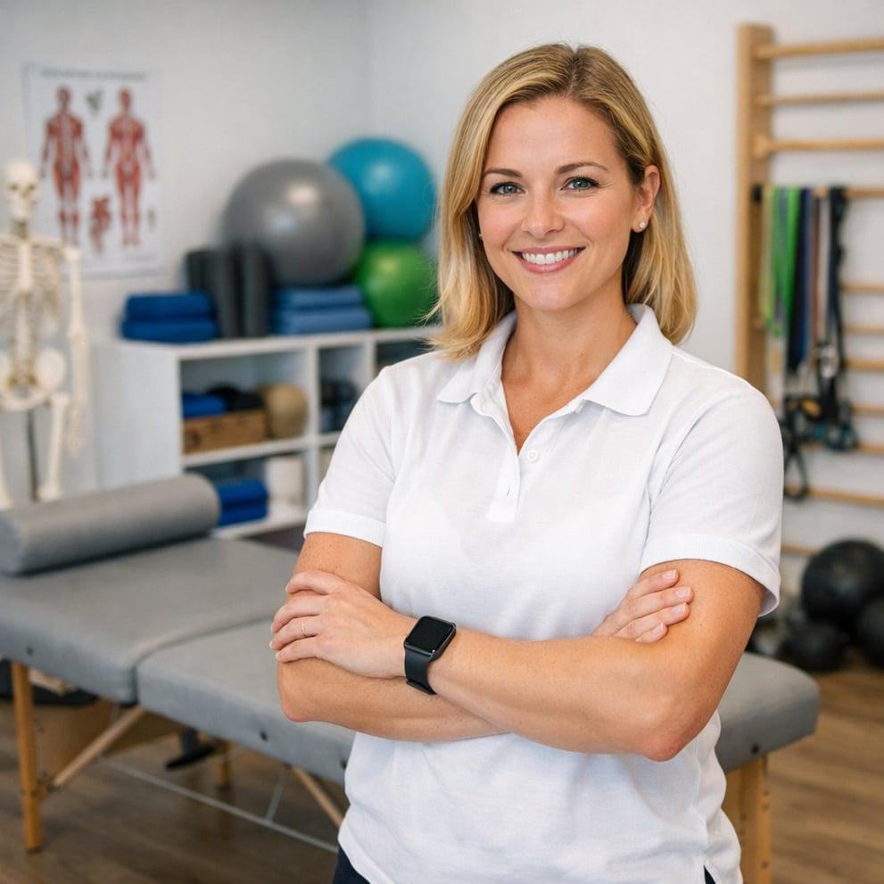
Dr. Sarah Jenkins
DPT · Running Biomechanics Specialist
Dr. Michael Hombsch
MPT · Athletic Reconditioning Specialist
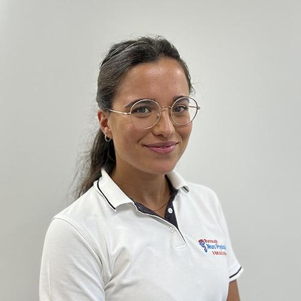
Dr. Raquel Ribeiro
PT, MSc · Vestibular Rehabilitation Lead
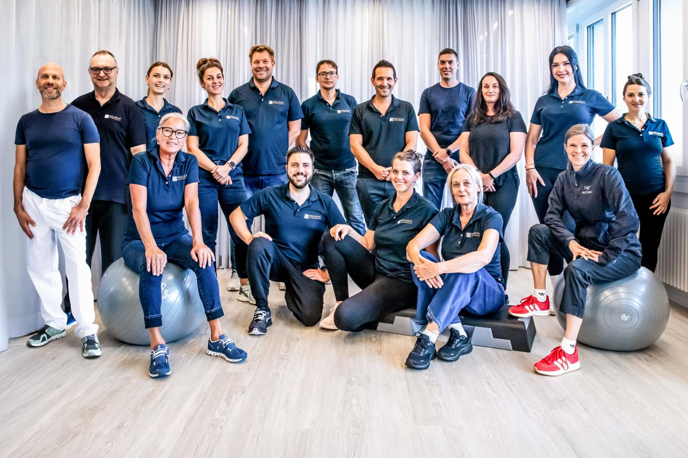
Dr. David Wetzel
DPT · Manual Mobilization Specialist
A Team That Works Together, Every Day.
From morning diagnostic case reviews to coordinated one-on-one sessions, our clinicians share observations and calibrate protocols as one united team.
Multidisciplinary Diagnostic Huddle
Clinicians conferring to tailor precise recovery timelines before patient arrival.
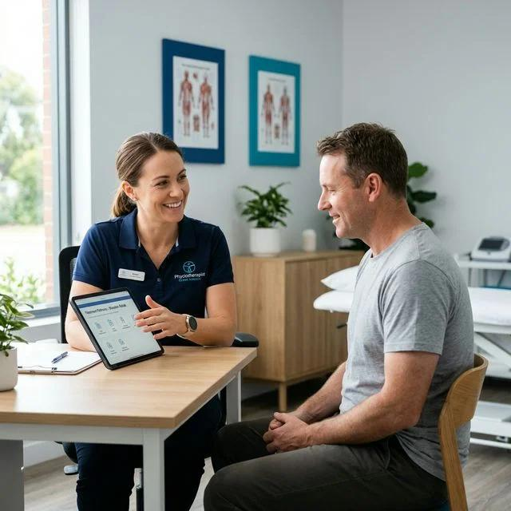
Listening to every patient with unhurried care.
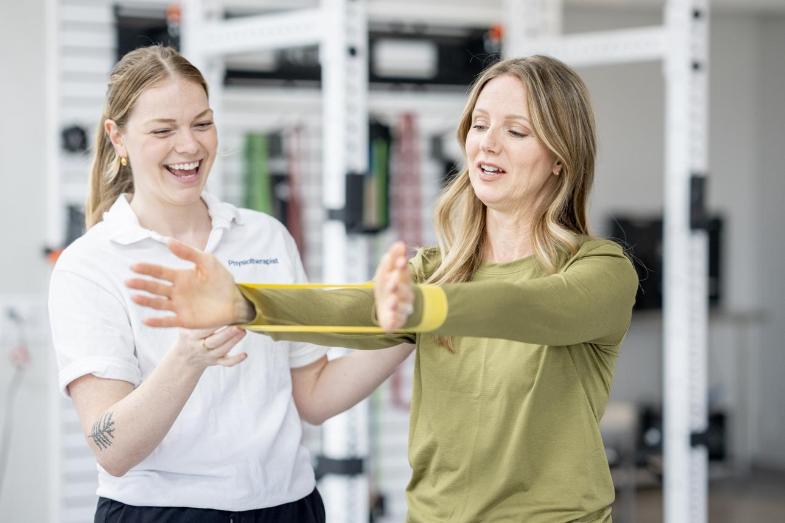
Supporting better movement and functional independence.
Weekly In-Clinic Diagnostic Peer Reviews
Continuous review of post-surgical protocols and biomechanical assessment data.
One Unified Team. Diverse Sub-Specialties.
Click any discipline below to view the dedicated specialists who lead clinical care in that area.
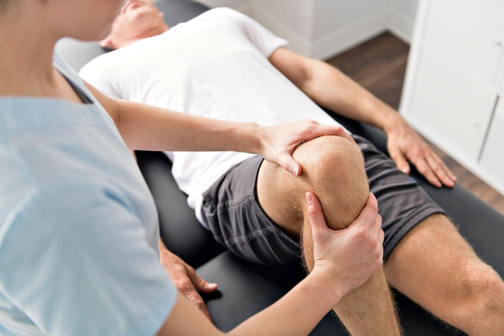
Joint & MuscleOrthopedic Care
Joint, muscle and mobility restoration for arthritis, post-fractures & joint stiffness.
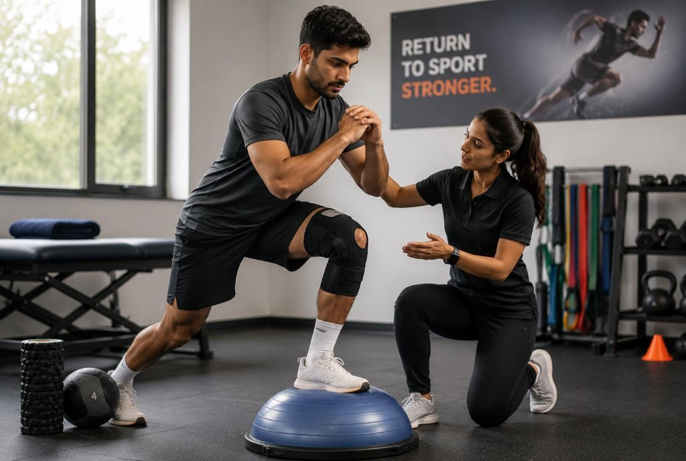
Athletic ReturnSports Rehabilitation
Injury recovery, ACL reconditioning, rotator cuff & dynamic athletic testing.
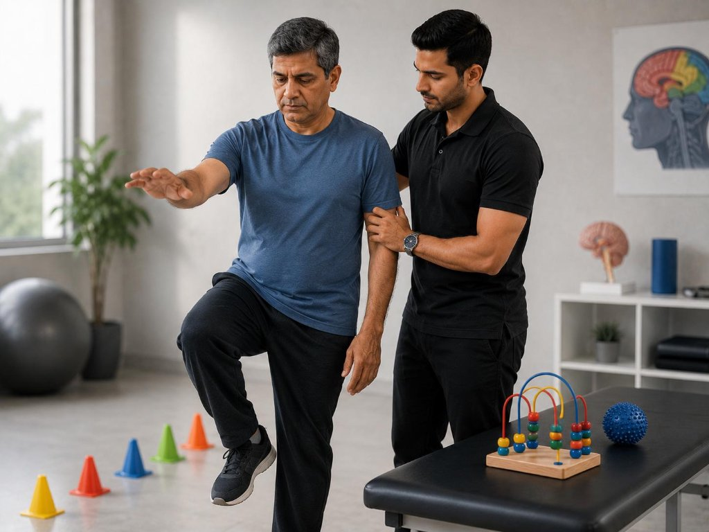
NeuroplasticityNeurological Care
Post-stroke retraining, balance, Parkinson's functional coordination & vertigo.
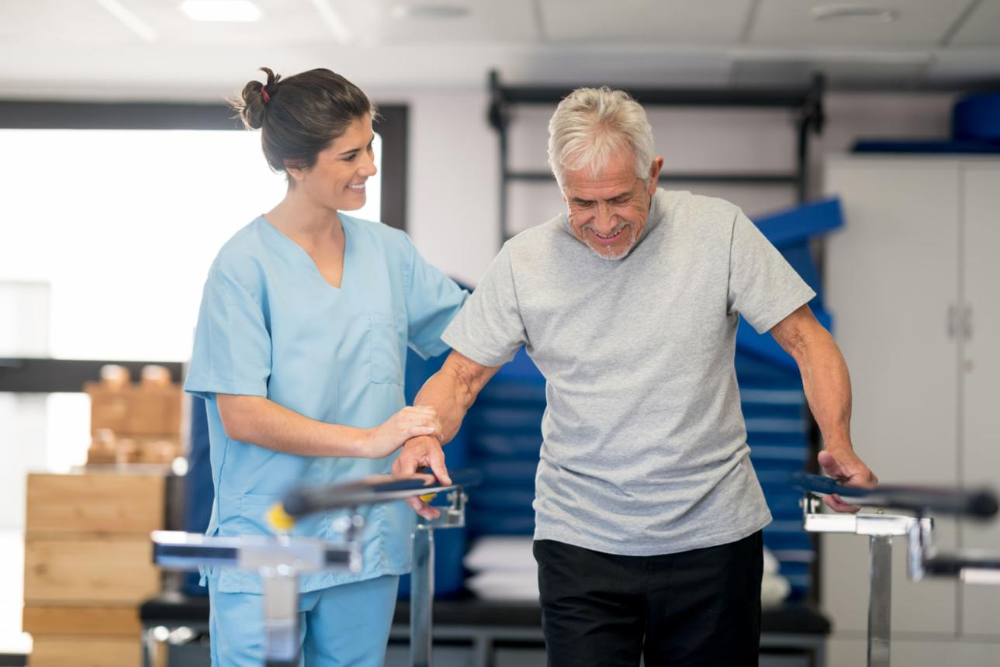
Active LongevityGeriatric Rehabilitation
Movement confidence, fall prevention, osteopenia conditioning & daily vitality.
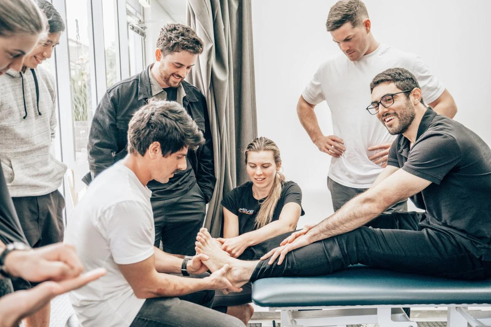
Continuous Education
40+ Annual Accredited Hours / Doctor
Growing Knowledge. Better Care.
Evidence-based physical therapy never stands still. Our faculty participates in continuous clinical peer reviews, fellowship residencies, and university clinical research partnerships.
Weekly Multidisciplinary Case Rounds
Clinicians review patient imaging, discuss rehabilitation milestones, and calibrate recovery timelines collaboratively.
Board Certified Fellowships (OCS & NCS)
Our doctors maintain advanced board certifications and specialize in manual therapy fellowship credentials (FAAOMPT).
Mentorship & Clinical Protocol Standardization
Every resident clinician co-treats with senior faculty, guaranteeing identical high-standard rehabilitation across all suites.
Meet the Team. Start Your Journey.
Have questions about your treatment or looking for the right specialist for your specific diagnosis? Our clinical team and intake coordinators are ready to help.
Prefer speaking with a coordinator? Call us directly: (415) 890-3321